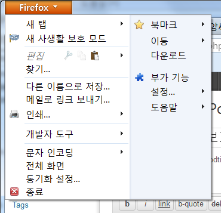
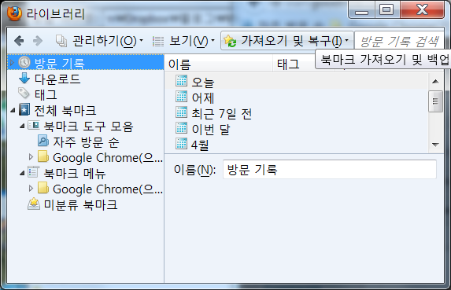
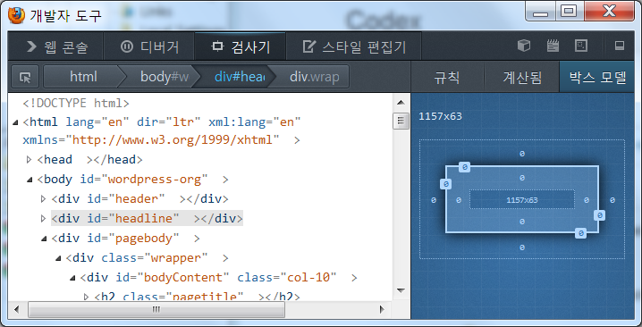

구글 크롬(Google Chrome)을 기본 브라우저로 사용한지 몇 년이 됐는데 최근 두어달 전부터 느려지는 문제가 발생했다. 처음 Chrome을 실행하면 괜찮다. 그런데 몇 시간 정도 사용하면? 정확히는 모르지만 어느 정도 사용하다 보면 클릭 응답이나 탭 전환이 몇 십초씩 걸릴 때도 있고 웹페이지 여는 것도 느려지곤 한다. 다시 실행해서 마지막 열었던 탭만 다시 열면 되는데 그 동작 하나 하는 게 번거롭다. 왜냐면 언제 느려지는지 명확하지 않아서 슬슬슬 느려지다 보면 내가 이미 바보같이 기다리는 데 익숙해지고 있는 거다. 그래서 나름 중요한 거 여느라 기다리는데 다시 열어서 봐야 한다는 생각을 자꾸 미루게 되고 점점 느려지니 점점 그 재실행이 번거롭다는 생각이 들고…
자동 업데이트로 버전업이 되고 있는데도 문제가 계속되는 것을 보면 OS나 어떤 것과 충돌이 발생하지 않나 싶은데 Google 신에게 물어봐도 뾰족한 수가 없다.
그래서 차선책으로 파이어팍스(Firefox)로 갈아탔다. Firefox가 Chrome보다는 좀 느리고(특히 시작할 때) Chrome보다 좀 호환성이 떨어지고 Chrome보다 좀 깔끔하지 않지만(기본 글꼴이라든가 이미지 로딩 처리 등) 메모리도 덜 잡아먹고 며칠 실행해도 느려지지 않고 있고 여러 확장 프로그램 등이 Chrome 이상 좋으니 별 문제가 없다. OS를 새로 설치하는 건 나는 정말 어쩌다 있는 일이므로 그냥 이렇게 살까 한다. 😉
하지만 Chrome에서 “북마크”(또는 즐겨찾기)를 가져와야 한다. 찾아보니 다음과 같이 가져올 수 있다. (가져온 이후에도 계속 동기화되게 하려면 XMarks 같은 사이트에 가입하고 확장 프로그램을 설치하는 방법이 있다.)

위와 같이 FF의 왼쪽 상단 드롭다운 메뉴를 열면 "북마크"가 있고 이걸 누르면 아래와 같은 북마크 관리 팝업이 뜬다. 다시 이 팝업의 메뉴 중 “가져오기 및 복구” > "다른 브라우저에서 가져오기…"를 선택하면 Chrome에서 북마크를 가져올 수 있다.

Firefox는 개발자에게 아주 유용한 브라우저다. Chrome이 최근에 많이 좋아지긴 했지만 Firefox에도 Firebug라는 유용한 도구가 있어 개발에 유용하다. 더구나 요즘엔 Firebug가 없어도 기본 도구가 아주 쓸모 있어지고 있다. 아래가 Firefox에 기본으로 있는 개발자 도구인데 훌륭하지 않은가?

[최근 상황] 2014년 현재는 다시 크롬으로 돌아간 상태다. 크롬이 계속 버전업을 하길래 다시 깔아봤는데 전과 같은 문제가 발생하지 않아서다. 파이어폭스도 많이 좋긴 하지만 처음 구동 시간이 느리다는 게 가장 치명적이다.
댓글
댓글을 불러오는 중입니다.